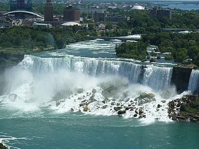
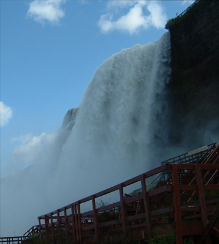
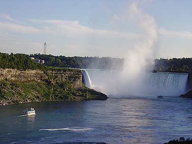
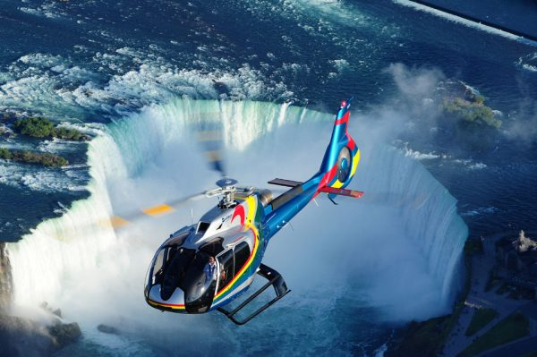
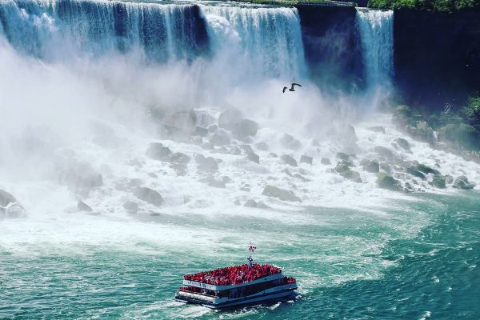
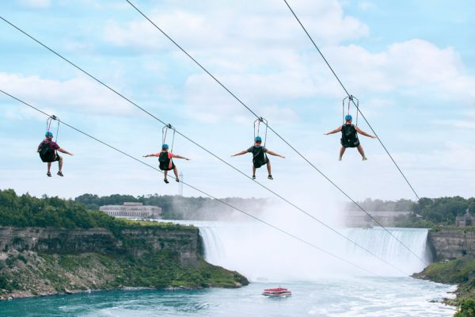
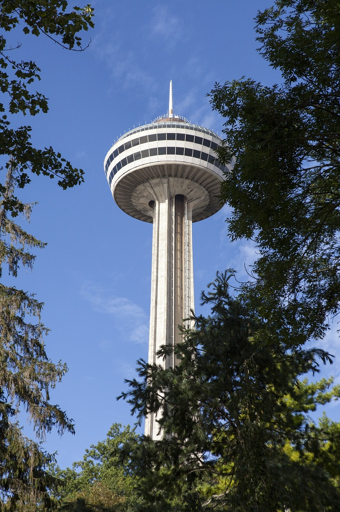
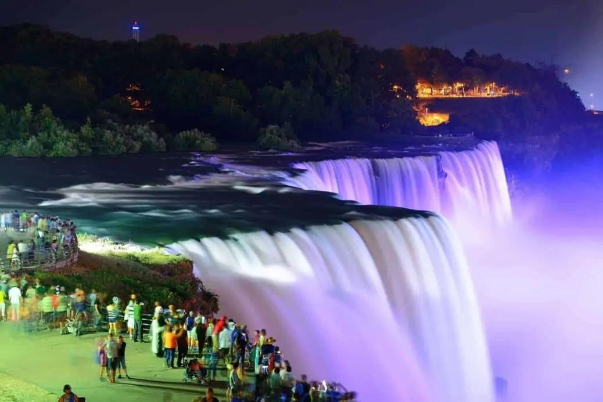
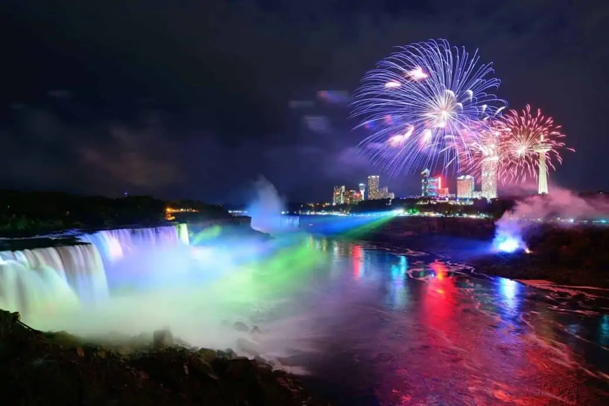

Les chutes du Niagara
Les célèbres chutes du Niagara sont situées en Ontario. Immenses, époustouflants et parfois considérés comme la huitième merveille du monde, elles constituent un véritable rituel de passage pour ceux qui ont l'intention d'explorer l'Est du Canada. Les chutes du Niagara sont facilement accessibles depuis Toronto et sa beauté naturelle est étonnante et fascinante. Elles forment une frontière naturelle entre le Canada et les États-Unis. Parce qu’elles sont les plus puissantes de toute l’Amérique du Nord, les chutes du Niagara attirent chaque année près de 15 millions de visiteurs.
Le panorama sur les chutes du Niagara
Les chutes du Niagara sont au nombre de 3. Elles portent toutes un nom permettant de les décrire. Si vous les longez côté canadien, du nord vers le sud (à partir du pont reliant le Canada et les Etats-Unis), vous apercevrez dans cet ordre les :
-

American Falls (ou chutes américaines)
-

Bridal Veil Falls (ou chutes que l’on assimile à un voile de la mariée), juste à côté, et beaucoup moins larges
-

Horseshoe Falls (ou chutes en forme de fer à cheval), un peu plus loin. Ce sont les plus impressionnantes!
Il faut savoir que les chutes du Niagara ne sont pas les plus hautes chutes du Monde, mais tombent tout de même d’une hauteur de 52 mètres. Soit l’équivalent d’un building de 13 étages ! A titre de comparaison, la chute d’eau la plus haute du site d’Iguazu, à la frontière de l’Argentine et du Brésil, tombe de 90 mètres.
En revanche les chutes du Niagara sont les chutes d’eau ayant le plus gros débit au monde : 340 000 m3 d’eau par minute durant la haute saison, et 168 000 m3/min l’été ! En effet une partie de l’eau est déviée durant l’été pour servir à la production d’hydroélectricité.
Les différentes attractions
Survoler les chutes du Niagara en hélicoptère

C’est une activité touristique plutôt répandue. Elle permet en effet de disposer d’un point de vue différent sur les chutes du Niagara, depuis le ciel.
Tout d’abord il faut savoir que des casques sont fournis et qu’ils diffusent des informations et des commentaires (en français) pendant le vol. Ces casques sont donc l’occasion également d’apprendre des choses sur les chutes du Niagara, les environs, et le vol.
Une fois que l’hélicoptère est dans les airs, le principe est bien sûr de se rapprocher des chutes du Niagara, en se dirigeant vers le sud donc.
En fonction du point de départ les paysages pourront varier : le temps de trajet pour arriver aux chutes est plus long depuis l’excursion au départ de la ville de Niagara on the Lake.
Au-delà des chutes du Niagara, qui sont bien évidemment le clou du spectacle, ce vol en hélicoptère est aussi l’occasion d’apercevoir entre autres : les centrales Sir Adam Beck, deux centrales hydroélectriques situées au nord des chutes du Niagara ; le Rainbow Bridge, le pont qui fait la jonction entre le Canada et les Etats-Unis et passe donc au-dessus de la rivière Niagara ; le Queen Victoria Park et la tour Skylon, la grande tour d’observation avec vue panoramique sur les chutes.
Découvrir les chutes en bateau
L'excursion en bateau de 20 minutes aux chutes vous emmène dans le voyage d'une vie. Profitez d'une vue imprenable sur la gorge du Niagara, les chutes américaines et les chutes Bridal Veil, et rencontrez les célèbres chutes canadiennes Horseshoe. Ressentez le rugissement tonitruant, la puissance impressionnante et la brume étonnante (un poncho protecteur recyclable est fourni) qui accompagnent ces merveilles naturelles ou roulez après le coucher du soleil pour une expérience de brume légère avec l'illumination des chutes.
Faire de la tyrolienne

Alors que les visiteurs peuvent avoir une vue imprenable sur les chutes du Niagara depuis les Etats-Unis mais aussi le Canada, il existe désormais une troisième option qui offre la vue la plus exaltante de cette merveille naturelle.
En effet, plusieurs tyroliennes ont été installées à travers ces chutes. Il faut avoir le cœur bien accroché pour tenter l’expérience ! Vous serez à une hauteur de 70 mètres, pour parcourir les 670 mètres qui relient la Grand View Marketplace de Niagara Parks à Ontario Power Company, au pied de la plus grande des trois chutes d’eau. Le tout à une vitesse d’environ 65 km/h.
Evidemment, la descente est rapide. En vitesse de croisière, le trajet dure à peine une minute. Mais le paysage ainsi que l’adrénaline la rendront mémorable et surtout inoubliable.
La plateforme d’observation Skylon Tower

Lors d’une visite aux chutes du Niagara, il est difficile de rater cette tour de la Skylon Tower. Celle-ci se situe en retrait de la corniche, et mesure plus de 150 mètres de hauteur.
Le principe de cette tour d’observation est de monter à son sommet, au niveau de la plateforme d’observation. Et de profiter du paysage donc, avec les chutes du Niagara en contrebas. Ce lieu est doté également de restaurants, dont un situé au sommet dans un espace qui tourne lentement sur lui-même (une rotation par heure). Ceci pour profiter de vues différentes sans bouger de son siège ! L’accès au sommet se fait via un ascenseur en verre, extérieur à la structure.
Journey behind the fall
C'est une autre activité originale qui permet de descendre au pied de la cascade ou même directement derrière les chutes Horseshoe. Du haut des chutes, vous descendrez progressivement avec l'ascenseur et vous traverserez un tunnel qui passe par plusieurs postes d'observation. Comme pour beaucoup d'autres activités, plus vous vous rapprochez des chutes, plus vous aurez d'éclaboussures. Pour assurer une protection étanche, vous devrez protéger soigneusement votre équipement électronique.
White Water Park
Offrez-vous une promenade au-dessus des eaux vives. En parcourant à pied la passerelle en bois située le long des rapides, vous pourrez observer de très près la puissance de rivière Niagara. Le long de la passerelle, d'innombrables plates-formes d'observation vous permettent d'apprécier les paysages spectaculaires
Activités nocturnes
Chaque soir, après le coucher du soleil, les chutes s'illuminent de multiples couleurs et offrent des spectacles à couper le souffle. De nombreux feux d'artifice sont organisés tout au long de l'année, le week-end ou le vendredi soir.
 Vous pourrez profiter pleinement de ces activités nocturnes en rejoignant l’un des nombreux hôtels disponibles à proximité. Ils mettent à disposition tout le confort nécessaire, et vous permettront de passer une nuit dans une chambre avec vue sur les chutes du Niagara.